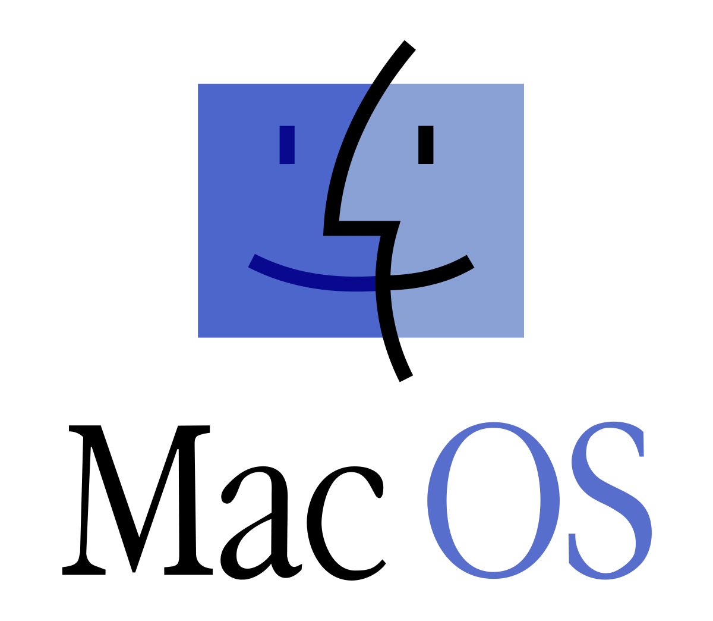
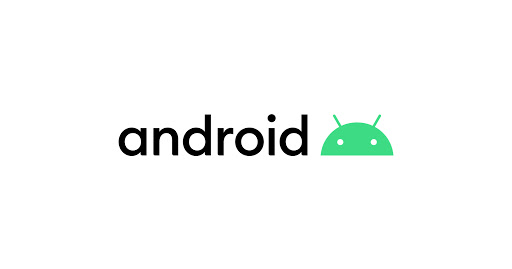

Список ОС
Linux
- Портативность
- Небольшой размер
- Низкое потребление памяти
- Безопасность
- Аппаратные средства доступны через драйверы
- Аппаратные средства работают медленнее потому что драйверы работают в пользовательском режиме
- Процессы должны ждать свою очередь чтобы получить информацию
- Процессы не могут получить доступ к другим процессам не ожидая
- Более прямой доступ к аппаратным средствам
- Проще обмен данными между процессами
- Процессы реагируют быстрее
- Большой размер
- Занимает много оперативной памяти
- Менее безопасно
- Возможность выбора того что будет работать в пространстве ядра и пользователя
- Меньше по размеру чем монолитное ядро
- Более гибкое
- Может работать медленнее
- Драйверы устройств выпускаются производителями
Debian
Ubuntu
Linux Mint
Arch Linux
Gentoo Linux
Manjaro Linux
- Предустановленное рабочее окружение
- Предустановленные графические приложения для легкой установки программ и обновления своей системы
- Предустановленные кодеки для проигрывания мультимедиа
OpenSUSE
Fedora
Fedora Workstation
Fedora Server
Fedora IoT
Mac OS

Windows
MS DOS
FreeBSD
Android

iOS

Linux — общее название UNIX-подобных операционных систем на основе одноимённого ядра и собранных для него библиотек и системных программ, разработанных в рамках проекта GNU. GNU/Linux работает на PC-совместимых системах семейства Intel x86, а также на IA-64, AMD64, PowerPC, ARM и многих других.
К операционной системе GNU/Linux также часто относят программы, дополняющие эту операционную систему, и прикладные программы, делающие её полноценной многофункциональной операционной средой. В отличие от большинства других операционных систем, GNU/Linux не имеет единой «официальной» комплектации. Вместо этого GNU/Linux поставляется в большом количестве так называемых дистрибутивов, в которых программы GNU соединяются с ядром Linux и другими программами.
Большинство пользователей для установки GNU/Linux используют дистрибутивы. Дистрибутив — это не просто набор программ, а ряд решений для разных задач пользователей, объединённых едиными системами установки, управления и обновления пакетов, настройки и поддержки.
Официальным логотипом и талисманом Linux является пингвин Tux, созданный в 1996 году Ларри Юингом. Торговая марка «Linux» принадлежит создателю и основному разработчику ядра Линусу Торвальдсу.
Ядро Linux
Ядро Linux содержит более 13 миллионов строк кода и является одним из самых крупных проектов с открытым исходным кодом в мире. Так что такое ядро Linux и для чего оно используется?
ЧТО ТАКОЕ ЯДРО LINUX?
Ядро - это самый низкий уровень программного обеспечения, которое взаимодействует с аппаратными средствами компьютера. Оно отвечает за взаимодействие всех приложений, работающих в пространстве пользователя вплоть до физического оборудования. Также позволяет процессам, известным как сервисы получать информацию друг от друга с помощью системы IPC.
ВИДЫ И ВЕРСИИ ЯДРА
Что такое ядро Linux вы уже знаете, но какие вообще бывают виды ядер? Есть различные способы и архитектурные соображения при создании ядер с нуля. Большинство ядер могут быть одного из трех типов: монолитное ядро, микроядро, и гибрид. Ядро Linux представляет собой монолитное ядро, в то время как ядра Windows и OS X гибридные. Давайте сделаем обзор этих трех видов ядер.
МИКРОЯДРО
Микроядра реализуют подход, в котором они управляют только тем, чем должны: процессором, памятью и IPC. Практически все остальное в компьютере рассматривается как аксессуары и обрабатывается в режиме пользователя. Микроядра имеют преимущество в переносимости, они могут использоваться на другом оборудовании, и даже другой операционной системе, до тех пор, пока ОС пытается получить доступ к аппаратному обеспечению совместимым образом.
Микроядра также имеют очень маленький размер и более безопасны, поскольку большинство процессов выполняются в режиме пользователя с минимальными привилегиями.
Плюсы
Минусы
МОНОЛИТНОЕ ЯДРО
Монолитные ядра противоположны микроядрам, потому что они охватывают не только процессор, память и IPC, но и включают в себя такие вещи, как драйверы устройств, управление файловой системой, систему ввода-вывода. Монолитные ядра дают лучший доступ к оборудованию и реализуют лучшую многозадачность, потому что если программе нужно получить информацию из памяти или другого процесса, ей не придется ждать в очереди. Но это и может вызвать некоторые проблемы, потому что много вещей выполняются в режиме суперпользователя. И это может принести вред системе при неправильном поведении.
Плюсы
Минусы
ГИБРИДНОЕ ЯДРО
Гибридные ядра могут выбирать с чем нужно работать в пользовательском режиме, а что в пространстве ядра. Часто драйвера устройств и файловых систем находятся в пользовательском пространстве, а IPC и системные вызовы в пространстве ядра. Это решение берет все лучшее из обоих предыдущих, но требует больше работы от производителей оборудования. Поскольку вся ответственность за драйвера теперь лежит на них.
Плюсы
Минусы
ГДЕ ХРАНЯТСЯ ФАЙЛЫ ЯДРА?
Где находится ядро Linux? Файлы ядра Ubuntu или любого другого Linux-дистрибутива находятся в папке /boot и называются vmlinuz-версия. Название vmlinuz походит с эпохи Unix. В шестидесятых годах ядра привыкли называть просто Unix, в 90-х годах Linux ядра тоже назывались - Linux.
Когда для облегчения многозадачности была разработана виртуальная память, перед именем файла появились буквы vm, чтобы показать что ядро поддерживает эту технологию. Некоторое время ядро называлось vmlinux, но потом образ перестал помещаться в память начальной загрузки, и был сжат. После этого последняя буква x была изменена на z, чтобы показать что использовалось сжатие zlib. Не всегда используется именно это сжатие, иногда можно встретить LZMA или BZIP2, поэтому некоторые ядра называют просто zImage.
Нумерация версии состоит из трех цифр, номер версии ядра Linux, номер вашей версии и патчи или исправления.
В паке /boot можно найти не только ядро Linux, такие файлы, как initrd.img и system.map. Initrd используется в качестве небольшого виртуального диска, который извлекает и выполняет фактический файл ядра. Файл System.map используется для управления памятью, пока еще ядро не загрузилось, а конфигурационные файлы могут указывать какие модули ядра включены в образ ядра при сборке.
АРХИТЕКТУРА ЯДРА LINUX
Так как ядро Linux имеет монолитную структуру, оно занимает больше и намного сложнее других типов ядер. Эта конструктивная особенность привлекла много споров в первые дни Linux и до сих пор несет некоторые конструктивные недостатки присущие монолитным ядрам.
Но чтобы обойти эти недостатки разработчики ядра Linux сделали одну вещь - модули ядра, которые могут быть загружены во время выполнения. Это значит что вы можете добавлять и удалять компоненты ядра на лету. Все может выйти за рамки добавления функциональных возможностей аппаратных средств, вы можете запускать процессы сервера, подключать виртуализацию, а также полностью заменить ядро без перезагрузки.
Представьте себе возможность установить пакет обновлений Windows без необходимости постоянных перезагрузок.
МОДУЛИ ЯДРА
Что, если бы Windows уже имела все нужные драйвера по умолчанию, а вы лишь могли включить те, которые вам нужны? Именно такой принцип реализуют модули ядра Linux. Модули ядра также известные как загружаемые модули (LKM), имеют важное значение для поддержки функционирования ядра со всеми аппаратными средствами, не расходуя всю оперативную память.
Модуль расширяет функциональные возможности базового ядра для устройств, файловых систем, системных вызовов. Загружаемые модули имеют расширение .ko и обычно хранятся в каталоге /lib/modules/. Благодаря модульной природе вы можете очень просто настроить ядро путем установки и загрузки модулей. Автоматическую загрузку или выгрузку модулей можно настроить в конфигурационных файлах или выгружать и загружать на лету, с помощью специальных команд.
Сторонние, проприетарные модули с закрытым исходным кодом доступны в некоторых дистрибутивах, таких как Ubuntu, но они не поставляются по умолчанию, и их нужно устанавливать вручную. Например, разработчики видеодрайвера NVIDIA не предоставляют исходный код, но вместо этого они собрали собственные модули в формате .ko. Хотя эти модули и кажутся свободными, они несвободны. Поэтому они и не включены во многие дистрибутивы по умолчанию. Разработчики считают что не нужно загрязнять ядро несвободным программным обеспечением.
Теперь вы ближе к ответу на вопрос что такое ядро Linux. Ядро не магия. Оно очень необходимо для работы любого компьютера. Ядро Linux отличается от OS X и Windows, поскольку оно включает в себя все драйверы и делает много вещей поддерживаемых из коробки. Теперь вы знаете немного больше о том, как работает ваше программное обеспечение и какие файлы для этого используются.

Debian - операционная система, состоящая из свободного ПО с открытым исходным кодом. В настоящее время Debian GNU/Linux — один из самых популярных и важных дистрибутивов GNU/Linux, в первичной форме оказавший значительное влияние на развитие этого типа ОС в целом. Также существуют проект на основе другого ядра: Debian GNU/Hurd. Debian может использоваться в качестве операционной системы как для серверов, так и для рабочих станций.
Debian имеет наибольшее среди всех дистрибутивов хранилище пакетов — готовых к использованию программ и библиотек, — и если даже не по их числу, то по числу поддерживаемых архитектур: начиная с ARM, используемой во встраиваемых устройствах, наиболее популярных x86-64 и PowerPC, и заканчивая IBM S/390, используемой в мейнфреймах. Для работы с хранилищем разработаны разные средства, самое популярное из которых — Advanced Packaging Tool (APT).
Название «Debian» составлено из имён основателя проекта Иана Мёрдока (Ian Murdock) и его жены Дебры Линн (Debra Lynn).

Ubuntu — это разрабатываемая сообществом, основанная на ядре Linux операционная система, которая идеально подходит для использования на персональных компьютерах, ноутбуках и серверах. Она содержит все необходимые программы, которые вам нужны: программу просмотра Интернет, офисный пакет для работы с текстами, электронными таблицами и презентациями, программы для общения в Интернет и много других.
Linux mint - развиваемый сообществом бесплатный дистрибутив Linux, основанный на Ubuntu и Debian. Цель проекта — предоставить пользователю «современную, элегантную и удобную операционную систему, которая одновременно является мощной и простой в использовании». Linux Mint предоставляет полную поддержку разнообразных форматов мультимедиа, включает в себя некоторые проприетарные программы и поставляется в комплекте с обширным набором приложений с открытым исходным кодом. Основатель проекта — Клемент Лефевр, в развитии также активно участвуют команда разработчиков (Mint Linux Team) и сообщество пользователей.

Arch Linux - это независимо разрабатываемый x86-64 дистрибутив GNU/Linux общего назначения, достаточно гибкий для выполнения любой роли. Процесс разработки фокусируется на простоте, минимализме и элегантности кода. Arch устанавливается в виде минимальной базовой системы, настраивается пользователем под собственные нужды путём построения уникальной среды с установкой только необходимых компонентов. Инструменты настройки с графическим интерфейсом официально не предоставляются, и большая часть настроек системы выполняется из консоли путём редактирования простых текстовых файлов. Основанный на модели плавающих релизов, дистрибутив Arch стремится оставаться предельно современным и предлагает последние стабильные версии большинства пакетов.
Gentoo Linux - дистрибутив GNU/Linux с мощной и гибкой технологией Portage, совмещающей в себе возможности конфигурирования и настройки, а также автоматизированную систему управления пакетами. Последняя создавалась под влиянием системы управления пакетами во FreeBSD. Отличительной особенностью Gentoo является возможность оптимизации под конкретное аппаратное обеспечение.
Дистрибутив ведёт своё начало с разработки Дэниелом Роббинсом дистрибутива Enoch Linux в 1999 году. Благодаря системе Portage, позволяющей сделать из Gentoo практически всё, что угодно (от сервера до рабочей станции), этот дистрибутив можно отнести к так называемым мета-дистрибутивам.
Manjaro - дружественный Линукс дистрибутив, основанный на независимо разрабатываемой операционной системе Arch. В сообществе Линукс Arch примечателен своей исключительной быстротой, мощностью и легкостью, предоставляя пользователям доступ к свежайшему программному обеспечению. Но при этом Arch нацелен на более опытных и технически подкованных пользователей. Сам по себе он, как правило, считается недосягаемым для тех, кому не достает технических знаний (или навыков) для его использования.
Разрабатываемый в Австрии, Франции, Германии Manjaro обладает всеми достоинствами операционной системы Arch, при этом делая упор на дружественность к пользователю и доступность. Manjaro подходит и для новичков, и для искушенных пользователей Линукс. Новичков порадует понятный установщик и то, что сама система готова к работе, что назывется, "из коробки". При этом она имеет следующие особенности:
Продвинутым пользователям Manjaro понравится своей возможностью конфигурирования и универсальностью, чтобы удовлетворить личный вкус и предпочтения. Кроме того, есть минималистское NET-издание, также доступное в версиях 32 и 64 бита, которое полностью лишено какого-либо предварительно установленного программного обеспечения, что обеспечивает лишь базовую установку, на основе которой можно создать свою собственную систему. Начав работать в командной строке, вы ни в чем не будете ограничены при выборе приветственных окон, рабочих столов, драйверов оборудования, программ и приложений и прочих компонентов!

openSUSE — это стабильный, легкий в использовании и законченный многоцелевой Linux дистрибутив.
Его могут использовать обычные пользователи и разработчики на своих рабочих станциях и серверах. Этот дистрибутив отлично подходит начинающим пользователям, опытным пользователям и гуру, таким образом он идеально подходит для всех!
В openSUSE есть все, что вам может понадобиться для работы и развлечений. Просмотр интернет сайтов, работа с почтой, общение с друзьями, работа с документами и многое другое - все совершенно бесплатно.

Fedora - дистрибутив Linux, спонсируемый фирмой Red Hat и содержащий возможности, которые в будущем предполагаются к использованию в дистрибутиве Red Hat Enterprise Linux. Цель проекта — построение целостной операционной системы из свободного программного обеспечения силами сообщества в духе экосистемы Red Hat Linux. Версии выходят каждые 6—8 месяцев по публичному расписанию.
Fedora Workstation — это отточенная, легкая в использовании операционная система для переносных и настольных компьютеров с полным набором инструментов для разработчиков и производителей всех видов.

Fedora Server — мощная, гибкая операционная система, в которую вошли лучшие и самые новые технологии для центров обработки данных. Она дает вам контроль над всей вашей инфраструктурой и услугами.

Fedora IoT предоставляет проверенную платформу с открытым исходным кодом в качестве надежной основы для экосистем IoT.
Mac OS (Macintosh Operating System) - семейство проприетарных операционных систем производства корпорации Apple. Разработана для линейки персональных компьютеров Macintosh. Популяризация графического интерфейса пользователя в современных операционных системах часто считается заслугой Mac OS. Она была впервые представлена в 1984 году вместе с персональным компьютером Macintosh 128K.
Apple хотела, чтобы Macintosh представлялся как «компьютер для всех остальных». Самого термина «Mac OS» в действительности не существовало до тех пор, пока он не был официально использован в середине 1990-х годов. С тех пор термин применяется ко всем версиям операционных систем Макинтоша как удобный способ выделения их в контексте других операционных систем.
Ранние версии Mac OS были совместимы только с компьютерами Mac, основанными на процессорах Motorola 68k. Последующие версии были совместимы с архитектурой PowerPC (PPC).
В 2012 году данная операционная система была переименована в OS X, а в 2016 переименована в macOS.
macOS
macOS - проприетарная операционная система производства Apple.
macOS Big Sur — новейшая версия (на 17.12.20) передовой операционной системы для настольных компьютеров — уже доступна пользователям Mac в формате бесплатного обновления.
12 ноября 2020 года Apple выпустила macOS Big Sur (macOS 11.0.1 build 20B29). Финальная версия новой ОС доступна для установки всем пользователям, устройства которых поддерживаются компанией.
До macOS Big Sur могут обновиться владельцы MacBook 2015 и новее, MacBook Air 2013 и новее, MacBook Pro 2013 и новее, Mac mini 2014 и новее, iMac 2014 и новее, iMac Pro 2017 и новее, Mac Pro 2013 и новее, на которых установлена macOS Mojave или более поздняя версия.
В macOS Big Sur обновлен дизайн, перерисованы иконки, туда включены новые системные звуки, добавлена прозрачность окон, обновлен центр уведомлений, там обновлены виджеты и появились интерактивные групповые уведомления с возможностью взаимодействия. В новую ОС добавлен центр управления системой по аналогии как он сделан в iOS 14 и с похожим набором функций.
Также там обновлен браузер Safari, который стал еще быстрее (на 50%, чем Chrome, как утверждают в Apple) и безопаснее, например, пользователь сможет разрешать расширениям доступ к данным на определенное время, там появилось отдельное меню, которое показывает количество заблокированных системой треков, которые могут следить за пользователем. Apple переработала настройки стартовой страницы браузера — теперь там можно изменить фоновое изображение, активировать отображение вкладок iCloud, включить отображение списка для чтений и предложений ассистента Siri. В новый Safari добавлен встроенный фирменный переводчик, который поддерживает английский, испанский, упрощённый китайский, французский, немецкий, русский или португальский языки.
Windows - семейство коммерческих операционных систем (OC) корпорации Microsoft, ориентированных на управление с помощью графического интерфейса. Изначально Windows была всего лишь графической программой-надстройкой для распространённой в 1980-х и 1990-х годах операционной системы MS-DOS.
Windows работает на платформах x86, x86-64 и ARM. Существовали также версии для DEC Alpha, MIPS, PowerPC и SPARC. Последней на данный момент (17.12.20) операционной системой Microsoft является Windows 10, представленная в июле 2015 года.

MS-DOS (Microsoft Disk Operating System) — дисковая операционная система для компьютеров на базе архитектуры x86. MS-DOS — самая известная ОС среди семейства DOS-совместимых операционных систем и самая используемая среди IBM PC-совместимых компьютеров с 1980-х до середины 1990-х годов, пока её не вытеснили операционные системы с графическим пользовательским интерфейсом, в основном из семейства Microsoft Windows.
FreeBSD — свободная операционная система семейства UNIX.
FreeBSD - это современная операционная система для серверов, десктопов и встроенных компьютерных платформ. Её код прошёл через более чем тридцать лет непрерывного процесса развития, совершенствования и оптимизации. FreeBSD разрабатывается и поддерживается большой командой разработчиков. FreeBSD обеспечивает современные сетевые возможности, впечатляющую безопасность и производительность на мировом уровне и используется на одних из самых загруженных веб-сайтов мира и на наиболее распространенных встроенных сетевых устройствах и устройствах хранения.
FreeBSD разрабатывается как целостная операционная система. Исходный код ядра, драйверов устройств и базовых пользовательских программ (т. н. userland), таких как командные оболочки и т. п., содержится в одном дереве системы управления версиями (до 31 мая 2008 — CVS, сейчас — SVN). Это отличает FreeBSD от GNU/Linux — другой свободной UNIX-подобной операционной системы, в которой ядро разрабатывается одной группой разработчиков, набор пользовательских программ — другими (например, проект GNU). А многочисленные группы собирают это всё в единое целое и выпускают в виде различных дистрибутивов Linux.
Android - платформа, расширяющая возможности мобильных устройств.
Технологии для телефонов, планшетов, часов, телевизоров и бортовых компьютеров в автомобилях.
Устройства Android не просто работают, но и делают жизнь пользователей легче. Возможности этой операционной системы позволяют вам избегать пробок с помощью GPS-навигатора, отправлять SMS на часах и получать ответы на вопросы от Ассистента. Под управлением Android работают примерно два с половиной миллиарда различных устройств – от телефонов с поддержкой 5G до самых передовых планшетов.
Android – операционная система, которая открыта для всех: разработчиков, дизайнеров и производителей устройств. Это означает, что возможность экспериментировать, предлагать революционные идеи и воплощать их в жизнь доступна большому количеству людей.
Устройства Android оснащены встроенными инструментами обеспечения безопасности. Google Play Защита проверяет все ваши приложения, а программное обеспечение и платформа регулярно обновляются и улучшаются. Система безопасности Android всегда на страже — без перерывов и выходных.
На устройствах Android вы сами решаете, к каким данным и когда предоставлять доступ. Например, вы можете отключить историю местоположений или историю приложений и веб-поиска. Если приложение пытается получить доступ к геоданным, когда оно не используется, вам приходит уведомление. Изменять разрешения теперь легко, поскольку все параметры конфиденциальности собраны на одной странице. Во всём, что касается обеспечения конфиденциальности, последнее слово всегда за вами.
iOS (до 24 июня 2010 года — iPhone OS) — мобильная операционная система для смартфонов, электронных планшетов, носимых проигрывателей и некоторых других устройств, разрабатываемая и выпускаемая американской компанией Apple. Была выпущена в 2007 году; первоначально — для iPhone и iPod touch, позже — для таких устройств, как iPad. В 2014 году появилась поддержка автомобильных мультимедийных систем Apple CarPlay. В отличие от Android (Google), выпускается только для устройств, производимых фирмой Apple.
В iOS используется ядро XNU, основанное на микроядре Mach и содержащее программный код, разработанный компанией Apple, а также код из ОС NeXTSTEP и FreeBSD. Ядро iOS почти идентично ядру настольной операционной системы Apple macOS (ранее называвшейся OS X). Начиная с самой первой версии, iOS работает только на планшетных компьютерах и смартфонах с процессорами архитектуры ARM.